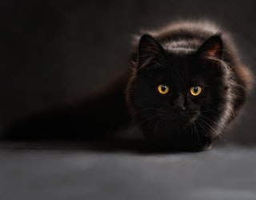
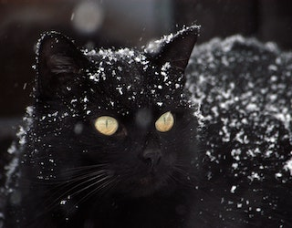

|  | Muitas pessoas consideram o número 13 como um símbolo de sorte, no entanto, a “sexta feira 13” ficou marcada como um dia de “maus agouros” e acontecimentos negativos. Uma das hipóteses, de acordo com o cristianismo, diz que a sexta-feira foi o dia em que Jesus foi crucificado, sendo que na sua última ceia estavam 13 pessoas sentadas à mesa. |
 |